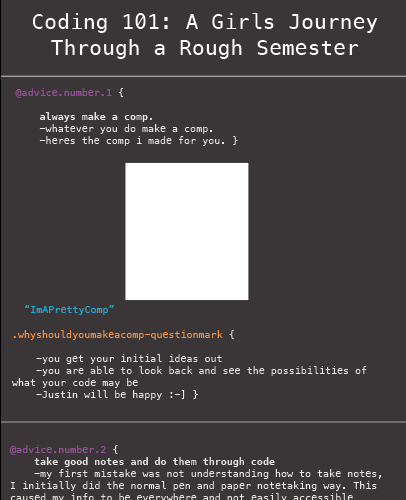

Coding Survival Guide
Coding 101: A Girls Journey Through a Rough Semester
@advice.number.1 {
always make a comp.
-whatever you do make a comp.
-heres the comp i made for you.

ImAPrettyComp
.whyshouldyoumakeacomp-questionmark {
-you get your initial ideas out
-you are able to look back and see the possibilities of what your code may be
-Justin will be happy :-] }
@advice.number.2 {
take good notes and do them through code
-my first mistake was not understanding how to take notes, I initially did the normal pen and paper notetaking way. This caused my info to be everywhere and not easily accessible
***Where do I find the assignment? Where do I actually code? Was that on Atom, or was it Github or no maybe on Slack?***
Make sure you focus on Atom!!
-notes are so important when you want to remeber some fancy code manueuver!!
***oh shoot how do I do a smooth scrool??***
***dont worry ayanah I have it in my notes!!!***
.takegoodnotes-andgetgoodboats-hahagetitcuzyoullmkemoney-and-peoplewithmoneyhaveboats
@advice.number.3 {
practice makes perfect
-make sure you are constantly making code
-it can be ugly, it can be smelly, but no matter what it is helping refine your skills
}
.coding-a-day-keeps-the-failing-grades-away
@advice.number.4 {
utilize justins skills
-Justin is so passionate in both code and teaching
-You may feel stupid at first (trust me I get it, and coding takes a long time to finally smush into your brain) but ask for help, slack him whenever!!
-Make sure you ask instead of pretending you’ll do it later, ask now and solve later if needed. (This was someting I lacked for the last project. My semester was crazy so when I had a question I foudn myself lacking the time to ask for help when I should have been slacking (haha get it lacking - slacking haha))
.slackit-soyouaintlackingit
@advice.number.5 {
have fun
-Last but not least don’t get too stressed. Yes it is like learning Spanish in 3 months and then trying to speak it fluently.. but you know what you can do it!! and this language isn’t Spanish it is coding which makes you feel like a cool robot!!
- Justin is a great teacher and won’t make you feel stupid or anything so you dont have to stress at all!! If you put in effort you’ll get an A (A for effort!! (or maybe a B but still a good grade.))
.codingrocksandsowillyou